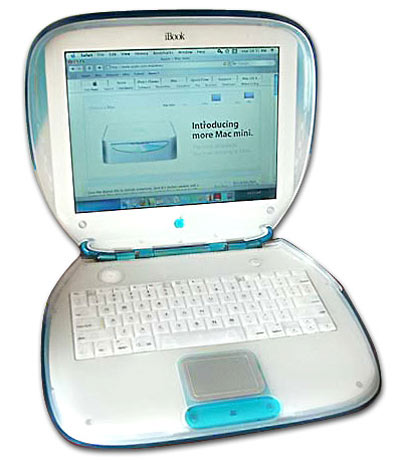
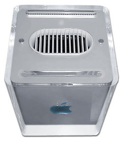
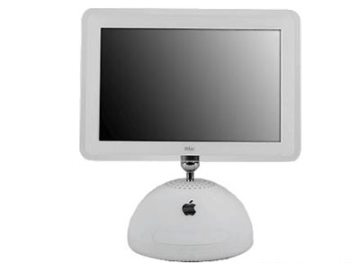

Chương 33

ừ khi giới thiệu chiếc máy iMac vào năm 1998, Jobs và Jony Ive đã tạo ra phong cách thiết kế lôi cuốn đặc trưng cho dòng máy tính của Apple. Đó là một chiếc máy tính xách tay cá nhân với kiểu dáng vỏ sò màu cam và một máy tính chuyên dụng để bàn trông như một khối nước đá lập phương trong suốt như tinh thần của Thiền (máy Mac Cube). Giống như những chiếc quần ống loe giấu ở đáy tủ quần áo, khi đó một vài mẫu thiết kế trông đẹp hơn lúc hồi tưởng về chúng sau này, ở chúng thể hiện một tình yêu thiết kế thái quá. Nhưng họ đã tạo ra sự khác biệt cho Apple và mang đến cho công chúng những cuộc bứt phá cần thiết để tồn tại trong một thế giới tràn ngập Windows.

IMac năm 1999
Vẻ quyến rũ của The Power Mac G4 Cube, phát hành vào năm 2000, ấn tượng đến mức người ta đã trưng bày một chiếc tại Viện Bảo tàng Nghệ thuật Hiện đại New York. Một khối lập phương với cạnh dài 20cm hoàn hảo, kích cỡ bằng một chiếc hộp khăn giấy Kleenex, là dấu ấn rõ nét về khiếu thẩm mỹ của Jobs. Sự tinh tế của nghệ thuật tối giản. Không có bất cứ nút bấm nào làm mặt phẳng tỳ vết. Không có khay đĩa, chỉ một rãnh nhỏ tinh tế. Và cũng như chiếc Macintosh nguyên thủy, chiếc mày này không có quạt làm mát. Một tinh thần Thiền thuần khiết. “Khi bạn trông thấy một thứ có vẻ ngoài tinh tế, bạn thốt lên, „ồ, tuyệt, có lẽ phần bên trong cũng rất sâu sắc,‟

The Power Mac G4 Cube
ông nói với tờ Newsweek. ‟‟Chúng tôi phát triển bằng cách loại bỏ những thứ vô dụng.” Vẻ ngoài không phô trương của G4 Cube lại khiến nó thật nổi trội và ấn tượng. Nhưng trái lại nó đã không thành công. Nó được thiết kế như một máy vi tính để bàn cao cấp, nhưng Jobs muốn chuyển đổi nó, việc ông thường xuyên thực hiện với mọi sản phẩm, thành một chiếc máy có thể tiếp cận đến đại trà người tiêu dùng. Cuối cùng Cube không thể thỏa mãn tốt cả hai thị trường.
Những nhà chuyên môn thời bấy giờ không cần một tác phẩm điêu khắc đẹp như trang sức, còn người tiêu dùng của thị trường đại chúng lại không sẵn sàng chi trả gấp đôi số tiền của một máy vi tính để bàn giản dị thông thường. Jobs dự đoán Apple sẽ bán 200 ngàn chiêc Cube mỗi quý. Trong quý đầu tiên, họ đã bán được phân nửa số đó. Quý thứ hai, họ bán chưa đến 30 ngàn chiếc. Sau đó, Jobs thừa nhận rằng ông đã thiết kế Cube quá cầu kỳ và đặt giá quá cao, cũng như với máy tính NeXT. Nhưng ông dần rút ra bài học. Khi xây dựng những sản phẩm như iPod, ông kiểm soát chi phí và tiến hành những thay thế cần thiết để nó có thể phát hành đúng thời hạn và hợp túi tiền.
Một phần vì việc kinh doanh ế ẩm của Cube, doanh thu của Apple vào tháng 9 năm 2000 khá thảm hại. Đó là ngay sau khi bong bóng công nghệ xì hơi và thị trường của Apple trong lĩnh vực giáo dục bị thu hẹp. Giá cổ phiếu công ty, từng lên trên mức 60 đô-la, trong một ngày đã mất tới 50% giá trị, vào đầu tháng mười năm đó, giá cổ phiếu đã rớt xuống còn dưới 15 đô-la.
Nhưng những điều đó không ngăn cản Jobs tiếp tục cố gắng sáng tạo thiết kế mới, đặc biệt dù chúng có thể kém sinh động. Khi màn hình phẳng trở nên khả thi về mặt thương mại, ông quyết định đã đến lúc thay thế iMac, một máy vi tính để bàn cá nhân có hình dáng như trong phim hoạt hình Jetsons. Ive đưa ra một mẫu thiết kế theo lối cổ điển, với những thiết bị bên trong máy vi tính gắn vào mặt sau màn hình phẳng. Jobs không thích mẫu này. Như ông vẫn thường làm, ở cả Pixar và Apple, ông tạm ngừng mọi việc để suy nghĩ sâu thêm vấn đề. ông cảm thấy một phần trong mẫu thiết kế thiếu đi tính thuần khiết. “Tại sao phải dùng màn hình phẳng rồi lại gắn tất cả mọi thứ vào phía sau?” ông hỏi Ive. “Chúng ta nên để mỗi thành phần là chính bản thân chúng.” Hôm đó, Jobs về nhà sớm hơn để nghiền ngẫm vấn đề, rồi ông gọi Ive đến. Họ đi vòng quanh khu vườn nơi vợ Jobs trồng rất nhiều hoa hướng dương. “Mỗi năm tôi đều thực hiện một việc ngông cuồng trong khu vườn, lần này là một rừng hoa hướng dương, một ngôi nhà hoa hướng dương cho bọn trẻ,” bà nhớ lại. “Jony và Steve đang tập trung suy nghĩ về vấn đề thiết kế, rồi Jony hỏi, „Nếu màn hình tách rời khỏi bệ giống một bông hoa hướng dương thì sao?‟ ông ấy hào hứng và bắt đầu phác thảo.” Ive luôn muốn thiết kế của mình ẩn chứa một thông điệp, ông nhận thấy hình dạng của bông hoa hướng dương sẽ truyền đạt ý tưởng về một màn hình phẳng linh hoạt và nhanh nhạy đến mức nó có thể hướng đến mặt trời.
Trong thiết kế mới của Ive, màn hình máy Mac được gắn vào một cổ di động làm bằng crom, vì thế nó không chỉ trông giống một hoa hướng dương mà còn giống một chiếc đèn bàn luxo xấc xược. Thực tế, nó gợi lên vẻ tinh nghịch của Luxo Jr. trong bộ phim ngắn đầu tiên do John Lasseter thực hiện tại Pixar. Apple đã nhận được nhiều bằng thiết kế, hầu hết đều do công của Ive, nhưng trên một trong số đó, trên bằng sáng chế dành cho “hệ thống máy vi tính có một bộ phận di động gắn với màn hình phẳng,” Jobs đã tự ghi tên mình vào vị trí nhà sáng tạo đầu tiên.

model iMac G4 giới thiệu tháng Giêng năm 2002
Ngẫm lại, một vài thiết kế Macintosh của Apple có vẻ quá xinh xắn, trong khi những hãng sản xuất máy vi tính khác lại theo thái cực đối lập. Lẽ ra đó là ngành công nghiệp đòi hỏi sự sáng tạo, thế nhưng nó lại bị thao túng bởi những thiết kế hình hộp rập khuôn rẻ tiền. Sau một số thất bại với màu sơn xanh và vài kiểu dáng mới, những công ty như Dell, Compaq và HP đã sản xuất máy vi tính đại trà thông qua thuê ngoài và cạnh tranh bằng giá. Với những thiết kế can đảm và trình ứng dụng đột phá như iTunes và iMovie, Apple dường như là nơi duy nhất còn sáng tạo.
Bên trong là Intel
Sự sáng tạo của Apple còn sâu sắc ngoài sức tưởng tượng. Từ năm 1994, họ đã sử dụng bộ vi xử lý, gọi là PowerPC, do IBM và Motorola hợp tác sản xuất. Trong vài năm, nó nhanh hơn cả chip của Intel, một lợi thế luôn được Apple khai thác triệt để trong những mẩu quảng cáo hài hước.
Tuy nhiên, khi Job trở về, Motorola đã tụt hậu trong việc sản xuất ra những phiên bản chip mới.
Điều này làm nảy sinh cuộc chiến giữa Jobs và CEO của Motorola, Chris Galvin. Khi Jobs quyết định dừng cấp phép hệ thống điều hành Macintosh cho những nhà sản xuất bản sao, ngay khi ông trở về Apple vào năm 1997, ông đề nghị với Galvin rằng ông có thể xem xét dành một ngoại lệ cho bản sao của Motorola, StarMax Mac, nhưng chỉ khi Motorola tăng tốc phát triển chip PowerPC mới cho máy vi tính xách tay. Cuộc điện đàm trở nên căng thẳng. Jobs cho rằng chip của Motorola thật tệ hại. Galvin, vốn nóng tính, phản pháo. Jobs dập máy. Dự án Motorola StarMax bị hủy, Jobs âm thầm lên kế hoạch tách chip PowerPC của Motorola và IBM ra khỏi Apple và thay bằng chip Intel. Đó là một nhiệm vụ không đơn giản. Việc lập trình lại một hệ thống điều hành cũng phức tạp không kém.
Jobs không nhượng lại bất kỳ quyền lực thật sự nào cho ban giám đốc, nhưng ông vẫn sử dụng các buổi họp để phát triển ý tưởng và suy nghĩ thông qua những chiến lược bí mật, trong khi ông đứng trước bảng và tổ chức thảo luận tự do. Ban giám đốc thảo luận trong mười tám tháng ròng rã, cân nhắcliệu họ có nên chuyển sang sử dụng cấu trúc của Intel. “Chúng tôi bàn luận, đặt ra một loạt câu hỏi và cuối cùng tất cả chúng tôi quyết định điều này là cần thiết,” Art Levinson, một thành viên trong ban giám đốc nhớ lại.
Paul otellini, khi đó đang nhậm chức chủ tịch, sau này trở thành CEO của Intel, bắt đầu hội ý riêng với Jobs. Họ đã biết nhau khi Jobs còn đấu tranh để duy trì NeXT, sau này otellini kể thêm, “tính kiêu ngạo của ông ấy tạm thời bộc phát.” otellini có cách nhìn nhận điềm tĩnh và mỉa mai về mọi người, trong một lần trao đổi với Jobs tại Apple vào đầu những năm 2000, ông có vẻ thích thú hơn là khó chịu khi phát hiện ra, “phần tinh túy của Jobs lại sắp ra đi, ông ấy dường như không thể khiêm tốn được nữa.” Intel đã giao dịch với những nhà sản xuất máy vi tính khác, và Jobs muốn có được giá tốt hơn giá của họ. “Chúng tôi phải vận dụng khả năng sáng tạo để kết nối các con số,” otellini nói. Phần lớn nội dung đàm phán được thông qua, đúng như Jobs mong muốn, trong những chuyến bách bộ dài, đôi khi trên con đường mòn dẫn lên Kính viễn vọng vô tuyến Dish bên trên trường đại học Stanford. Jobs thường sẽ bắt đầu chuyến đi bộ bằng một câu chuyện rồi giải thích làm thế nào ông nhìn thấy sự tiến hóa của lịch sử máy vi tính. Vào cuối buổi ông sẽ mặc cả về giá.
“Intel đã nổi tiếng là một đối tác khó chịu từ những ngày mà Andy Grove và Craig Barrett còn điều hành công ty,” otellini nói. “Tôi muốn cho mọi người thấy rằng Intel là một công ty bạn có thể cộng tác.” Vì thế một đội xuất sắc của Intel đã qua làm việc cùng Apple, họ đã có thể đánh bại kỳ hạn chuyển đổi trong sáu tháng. Jobs mời otellini đến cơ sở của hội đồng quân sư cấp cao “top 100” của Apple, ở đó otellini, khoác lên người bộ áo choàng phòng thí nghiệm Intel nổi tiếng, trông giống một bộ trang phục thỏ, và trao cho Jobs một cái ôm thật chặt. Tại lễ ra mắt công chúng vào năm 2005, otellini, vốn là người dè dặt, lặp lại hành động ấy. Dòng chữ “Apple và Intel, cuối cùng cũng bên nhau,” chạy thoáng qua trên màn hình lớn.
Bill Gates rất kinh ngạc. Việc thiết kế những chiếc vỏ máy tính màu sắc sặc sỡ không khiến ông ngạc nhiên, nhưng một chương trình chuyển đổi CPU máy vi tính bí mật, hoàn thành suôn sẻ và đúng hạn quả là một chiến công đáng ngưỡng mộ thật sự. Nhiều năm sau, khi tôi hỏi ông về những thành công của Jobs, ông nói với tôi “Nếu bạn nói, Thôi được, chúng tôi sẽ thay đổi chip vi xử lý và quyết không để lỡ một nhịp nào,‟ điều đó nghe thật bất khả thi. Nhưng họ đã làm được.”
Những quyền chọn
Một trong những tật xấu của Jobs là thái độ đối với tiền. Khi ông trở lại Apple vào năm 1997, ông tự hình dung mình như người cả năm chỉ kiếm được một đô-la, ông làm việc vì lợi ích của công ty hơn là vì cá nhân. Tuy nhiên, ông kiên trì với ý tưởng gói quyền chọn khổng lồ - quyền chọn mua cổ phiếu Apple tại mức giá ấn định - không tùy thuộc vào thủ tục đền bù hàng hóa thông thường của những bản đánh giá và chỉ tiêu thực hiện của ban giám đốc.
Khi ông loại bỏ từ “tạm thời” trong chức vụ của mình và chính thức trở thành CEO, (ngoài một chiếc chuyên cơ) ông còn được Ed Woolard và ban giám đốc đề nghị cấp cho một gói quyền chọn khổng lò vào đầu năm 2000; bất chấp hình tượng không màng tiền bạc được xây dựng lâu nay, ông đã khiến Woolard kinh ngạc khi yêu cầu nhiều quyền chọn hơn số lượng ban giám đốc đề nghị. Nhưng ngay khi ông nhận được chúng, hóa ra chúng lại chẳng có giá trị. cổ phiếu Apple rớt thảm hại vào tháng chín năm 2000 - vì doanh thu đáng thất vọng của Cube và vì bong bóng Internet vỡ tan - đã khiến quyền chọn trở nên vô dụng.
Mọi việc trở nên tồi tệ hơn vào tháng sáu năm 2001, khi tạp chí Fortune đăng loạt bài The Great CEO Pay Heist (những CEO được bồi thường quá mức), làm đề tài trang bìa. Một bức chân dung Jobs đang tự mãn cười khẩy, chiếm trọn trang bìa. Mặc dù lúc bấy giờ ưu đãi quyền chọn mua của ông vẫn chưa được công khai, theo tính toán của mô hình Black-Scholes định giá Quyền chọn mua/bán cổ phiếu cho thấy, giá trị của gói quyền chọn mà Steve nhận được là 872 triệu đô-la.
Fortune tuyên bố “cho đến lúc này” đó là gói đền bù lớn nhất từng được cấp cho một CEO. Đó là điều tệ hại nhất trên đời: Jobs gần như không một xu dính túi sau bốn năm làm việc tận tụy và thành công thay đổi cục diện tại Apple, thế mà ông lại trở thành áp phích đại diện cho những CEO tham lam, điều này khiến ông trông giả nhân giả nghĩa và hủy hoại hình tượng của ông. Ông viết một bức thư phản đối gay gắt gửi cho biên tập viên của tòa báo, tuyên bố rằng số quyền chọn của ông thực ra “không đáng một xu” và đề nghị bán chúng cho Fortune với giá bằng một nửa số tiền 873 triệu đô-la mà tạp chí này đăng tải.
Trong khi đó, Jobs muốn ban giám đốc cấp một gói quyền chọn lớn khác, vì quyền chọn cũ có vẻ vô dụng, ông nhấn mạnh, với ban giám đốc và dĩ nhiên là cả bản thân mình, yêu cầu này chủ yếu để chứng minh năng lực của ông được thừa nhận một cách đúng đắng hơn là vì tiền bạc. Sau này, khi trả lời trong vụ kiện của ủy ban chứng khoán (SEC) về những quyền chọn đó, ông nói “việc này không liên quan nhiều đến tiền. Mọi người đều muốn được các cộng sự thừa nhận năng lực... Tôi cảm thấy ban giám đốc không thật sự tôn trọng tôi.” ông cảm thấy lẽ ra ban giám đốc nên đề nghị cấp một gói quyền chọn mới mà không cần ông lên tiếng. “Tôi nghĩ mình làm việc khá tốt.
Và việc cấp một gói quyền chọn mới sẽ khiến tôi thấy khá hơn vào lúc đó.” Thực tế ban giám đốc do chính ông tuyển chọn đã rất nương theo ý ông. Vì thế họ quyết định cấp cho ông một gói quyền chọn khổng lồ khác vào tháng tám năm 2001, khi giá cổ phiếu dưới 18 đô-la. vấn đề là ông đang lo lắng về hình ảnh của mình, đặc biệt sau bài viết trên tạp chí Fortune, ông không muốn nhận ưu đãi mới trừ khi ban giám đốc cùng lúc hủy bỏ những quyền chọn cũ. Nhưng làm như vậy sẽ gây khó khăn về nghiệp vụ kế toán, vì nó sẽ tác động đến giá của những quyền chọn cũ. Điều này đòi hỏi một khoản bù đắp đối với thu nhập hiện tại. Cách duy nhất ngăn cản vấn đề “biến kế toán” là hủy bỏ những quyền chọn cũ của ông ít nhất sáu tháng sau khi quyền chọn mới được cấp. Ngoài ra, Jobs bắt đầu thảo luận với ban giám đốc về thời hạn thụ hưởng việc trao quyền chọn mới nên nhanh như thế nào.
Đến giữa tháng mười hai năm 2001, Jobs mới đồng ý nhận những quyền chọn mới, bất chấp dư luận dị nghị và chấp nhận chờ đợi sáu tháng trước khi quyền chọn cũ bị hủy. Nhưng đến khi đó giá cổ phiếu (vừa điều chỉnh được một phần) tăng thêm 3 đô- la, đạt mức giá 21 đô-la. Nếu giá thực hiện quyền chọn mới được xác lập ở mức mới thì mỗi quyền chọn sẽ giảm giá trị 3 đô-la.
Vì thế luật sư pháp lý của Apple, Nancy Heinen, xem xét giá chứng khoán gần đây và giúp chọn một ngày trong tháng mười, khi giá chứng khoán đạt 18,30 đô-la. Bà cũng phê chuẩn một loạt biên bản với hàm ý rằng ban giám đốc đã chấp thuận chuyển nhượng vào ngày đó. Việc ghi lùi ngày quyền chọn mua cổ phiếu có khả năng mang về 20 triệu đô-la cho Jobs.
Một lần nữa, Jobs lại phải gánh chịu tiếng xấu mà không kiếm được một xu. cổ phiếu Apple tiếp tục rớt giá, vào tháng ba năm 2003, thậm chí giá của quyền chọn mới thấp đến mức Jobs phải đổi tất cả để lấy một chuyển nhượng cổ phiếu toàn phần trị giá 75 triệu đô-la, số cổ phiếu này tương đương khoảng 8,3 triệu đô-la cho mỗi năm làm việc của ông kể từ khi quay lại vào năm 1997 cho đến cuối thời gian thụ quyền (vesting) năm 2006.
Những việc này lẽ ra sẽ không gặp trở ngại gì nếu vào năm 2006 tờ Wall Street Journal không đăng loạt bài về những quyền chọn cổ phiếu ghi lùi ngày. Apple không bị nhắc tên, nhưng ban giám đốc công ty cử một hội đồng gồm ba thành viên - AI Gore, Eric Schmidt từ Google và Jerry York, trước đây cộng tác với IBM và Chrysler - để điều tra quy trình của chính họ. “Ngay từ đầu, chúng tôi đã quyết định nếu Steve có sai sót, chúng tôi sẽ để giá cổ phiếu rớt xuống theo khả năng thực tế,” Gore nhớ lại. Hội đồng phát hiện một số điều trái quy tắc trong vụ chuyển nhượng cho Jobs và cho những viên chức cao cấp khác, và họ lập tức chuyển những phát hiện này đến ủy ban Chứng khoán Hoa Kỳ (SEC). Bản báo cáo cho thấy Jobs biết về việc ghi lùi ngày, nhưng ông lại không được hưởng lợi về mặt tài chính. (Hội đồng tại Disney cũng phát hiện ra việc ghi lùi ngày tương tự từng xảy ra ở Pixar khi Jobs còn nắm quyền.)
Những luật lệ kiểm soát nghiệp vụ ghi lùi ngày rất mù mờ, đặc biệt khi không ai tại Apple hưởng lợi từ những vụ chuyển nhượng được ghi ngày thiếu minh bạch. SEC mất tám tháng để thực hiện việc điều tra của riêng họ, vào tháng tư năm 2007, họ tuyên bố sẽ không truy tố Apple “một phần vì sự hợp tác nhanh chóng và nhiệt tình của họ trong cuộc điều tra của ủy ban và việc tự kiểm điểm nhanh chóng [của họ].” Mặc dù SEC phát hiện ra Jobs biết việc ghi lùi ngày quyền chọn cổ phiếu, nhưng họ không buộc tội ông vì ông “không biết về sự liên can kế toán.” SEC đệ trình đơn kiện chống lại cựu giám đốc tài chính của Apple, Fred Anderson, lúc bấy giờ là thành viên của ban giám đốc và Nancy Heinen, người đứng đầu ban luật sư. Anderson, một đại úy Không quân về hưu với chiếc cằm vuông, là người chính trực sâu sắc, một nhân vật thông thái và điềm tĩnh tại Apple, ông nổi tiếng về khả năng kiểm soát các cơn thịnh nộ của Jobs, ông bị SEC gọi ra hầu tòa chỉ vì “sự cẩu thả” liên quan đến giấy tờ trong một vụ chuyển nhượng (không phải vụ chuyển nhượng cho Jobs) và SEC đã cho phép ông tiếp tục ở lại ban điều hành. Tuy nhiên, cuối cùng ông quyết định từ chức khỏi ban giám đốc Apple.
Anderson nghĩ ông đã tạo nên một nhóm giơ đầu chịu báng. Khi ông hòa giải với SEC, luật sư của ông đưa ra một bản tuyên bố cho rằng Jobs cũng có lỗi. Họ nói Anderson đã báo trước với Jobs việc chuyển nhượng của ban lãnh đạo sẽ được định giá vào ngày mà ban giám đốc thực sự ký nếu không sẽ xuất hiện trách nhiệm tài chính,” và Jobs trả lời “ban giám đốc đã đưa ra chấp thuận ưu tiên.”
Heinen, người đầu tiên biết được mình phải chịu trách nhiệm, quyết định hòa giải và trả 2,2 triệu đô-la tiền phạt nhưng không thừa nhận hay phủ nhận bất kỳ lỗi lầm nào. Trong khi đó công ty lại hòa giải với một vụ kiện với cổ đông bằng cách đồng ý trả 14 triệu đô-la thiệt hại.
“Hiếm khi nhiều vấn đề có thể tránh khỏi lại được tạo ra vì một người quá ám ảnh bởi hình tượng của mình như thế,” Joe Nocera viết trên tờ New York Times. “ Một lần nữa, chúng tôi đang nói đến Steve Jobs.” Với những nguyên tắc và luật lệ ngạo mạn của mình, Jobs đã tạo ra một môi trường khó khăn cho những người như Heinen thực hiện yêu cầu của ông. Đôi khi, sự sáng tạo vĩ đại xuất hiện. Nhưng những người xung quanh ông phải trả giá. Chỉ nói riêng về những vấn đề đền bù, sự khó khăn trong việc bất chấp ý tưởng của ông đã khiến những người tốt phải ra những quyết định tồi.
Vấn đề bồi thường có đôi nét giống với thói đậu xe của Jobs, ông từ chối những ưu đãi như chỗ “Đậu xe riêng cho CEO”, nhưng ông lại lờ đi và cho rằng bản thân mình có quyền đậu vào chỗ người khuyết tật. ông muốn được nhìn nhận (bởi chính ông và những người khác) như một người sẵn lòng làm việc vì một đô-la một năm, nhưng ông vẫn muốn những gói cổ phiếu khổng lồ dành riêng cho mình. Sự xung đột bên trong ông là những mâu thuẫn của một người xuất thân từ phong trào phản văn hóa nổi loạn trở thành một nhà doanh nghiệp, một người luôn muốn tin rằng ông ta có thể tự do, tùy hứng mà không bị bán đứng và lợi dụng.